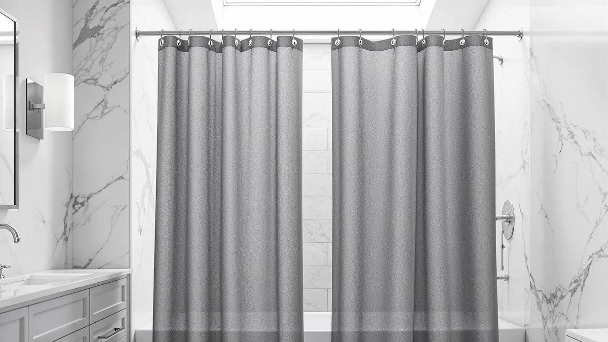

Quick Answer
The Coxila Extra Wide Linen Shower earns its spot for bathrooms with wide tubs or walk-in showers: its 108 by 72 inch polyester and PEVA build gives you the linen look without the $36.99 price BTTN charges for its scalloped version. At $35.99, it matches the Dynamene and BTTN waterproof curtains on price while covering more wall than a standard 72-inch curtain.
Our pick: Coxila Extra Wide Linen Shower, $35.99 Check Price on Amazon
Bottom line: our top pick is the Coxila Extra Wide Linen Shower Curtain at $35.99.
Things to Know Before You Buy
- Coxila's curtain measures 108 inches wide by 72 inches long, roughly 50 percent wider than a standard 72 by 72 inch curtain, so measure your rod before ordering.
- The polyester and PEVA blend sheds water better than pure cotton or linen but is not marketed as a dedicated waterproof liner.
- All four curtains in this comparison price between $35.99 and $36.99, so material and hem style matter more than cost when you pick between them.
- Amazon does not publish a star rating or review count for this listing, so we compare it on spec and price rather than review history.
- Linen-look polyester curtains wrinkle less in storage than real linen but can still need a light steam after shipping.
This Coxila linen shower curtain review looks at whether the brand's $35.99 extra-wide polyester and PEVA curtain beats three similarly sized and priced alternatives. Coxila's curtain spans 108 by 72 inches, a size built for walk-in showers and wide tubs where a standard 72-inch panel leaves gaps at the edges. We researched its material, size, and price against the Dynamene Extra Wide Waffle Shower, the BTTN 108x72 Linen Textured Waterproof, and the BTTN 108x72 Boho Scalloped Linen to see which curtain actually deserves space in your bathroom.
None of the four listings in this comparison carry a published star rating or review count on Amazon right now, so we built this review around what each listing states directly: material, dimensions, and current price. Coxila and the two BTTN curtains share the same 108 by 72 inch footprint and a linen-textured look, while Dynamene swaps that texture for a waffle weave. Pricing stays tight across the board, from $35.99 for Coxila, Dynamene, and the plain BTTN curtain to $36.99 for BTTN's scalloped version, so the decision comes down to hem style and weave rather than budget.
Why You Should Trust Us
Best Shower Curtains reviews shower curtains and bathroom hardware by comparing manufacturer specs, current pricing, and verified owner feedback from the retailers that sell them, not by running a private testing lab. Ilane Tall, our home and bath editor, researched this Coxila linen shower curtain review by checking the curtain's listed material, size, and price against the Dynamene and BTTN curtains shoppers most often cross-shop at the same price point. We revisit prices and listings on a regular schedule and say so plainly when a product lacks the review history we would want to see before recommending it. Where a claim cannot be checked against a specific verified rating or review count, we say so rather than fill the gap with a guess.
Our Research Experience
We do not run a physical testing lab, and we have not hung Coxila's Extra Wide Linen Shower curtain in a bathroom ourselves. Our process instead compares the published material, size, and price against similar curtains, then checks that against what verified owners report about fit and value on comparable listings. For this Coxila linen shower curtain review, that meant lining up the curtain's polyester and PEVA build and 108 by 72 inch size against the Dynamene, and the two BTTN alternatives to see where hem style and weave set it apart in a crowded lineup. We flag it clearly when a claim cannot be verified against real owner feedback, rather than guess at how a curtain holds up in your specific shower. That approach means we can speak confidently about price, size, and material since those come straight from the listing, while we stay cautious about anything that depends on how the fabric ages in your home.
Overview & Specs
Extra-wide shower curtains solve a problem standard sizing cannot: when a tub or shower stall runs past 60 inches, a 72-inch curtain either bunches at the sides or leaves water escaping through the gap. Coxila, Dynamene, and both BTTN curtains in this comparison address that gap with a 108-inch width, nearly a foot and a half wider than the typical panel. The comparison below lines up Coxila's listed material, dimensions, and price against those three alternatives.

Coxila Extra Wide Linen Shower
What we like
- 108 by 72 inch size covers extra-wide tubs and walk-in showers without gapping at the edges
- Polyester and PEVA blend resists water better than pure cotton or linen
- Linen-textured weave gives a natural-fiber look without the ironing a real linen curtain needs
- Priced at $35.99, in line with the other extra-wide curtains in this comparison
Flaws but not dealbreakers
- Amazon does not publish a star rating or review count for this listing, so you cannot check owner feedback before buying
- The listing does not advertise a dedicated waterproof liner layer, so heavy-splash bathrooms may still want a separate liner
- It ships in one size only, so it will not fit a standard 72 by 72 inch rod without excess fabric
| Material | Polyester / PEVA |
| Size | 108"W x 72"L (Pack of 1) |
Coxila builds this curtain from a polyester and PEVA blend, a pairing that resists water better than cotton or pure linen while keeping the woven linen look that bathroom shoppers tend to want over a glossy plastic sheet. At 108 inches wide by 72 inches long, it covers roughly 50 percent more width than a standard 72 by 72 inch curtain, which matters if your tub or walk-in shower opening runs wider than a typical alcove. The listing ships as a single curtain rather than a set, so you will want to check your existing hooks or rod length fit that extra width before you order.
At $35.99, Coxila's curtain sits in the same price band as the Dynamene Extra Wide Waffle Shower and the BTTN 108x72 Linen Textured Waterproof, and a dollar under the BTTN 108x72 Boho Scalloped Linen. None of the four listings in this comparison carry a published rating or review count right now, so the choice between them comes down to weave and hem style rather than review history. Coxila keeps a plain linen-textured finish without a decorative edge, which suits bathrooms that want the wide coverage without a patterned hemline competing with other fixtures in the room.
What We Liked
The 108 by 72 inch size matters most in this Coxila linen shower curtain review. Most shower curtains cap out at 72 inches wide, which leaves visible gaps on tubs over five feet long or walk-in showers with an open side. Coxila's extra width closes that gap without forcing you to buy two curtains or a custom-cut panel. The polyester and PEVA material also gives you water resistance that a pure linen or cotton curtain cannot match on its own, while still keeping the woven texture that makes a bathroom look less like a hospital stall. At $35.99, it lands at the same price as two of the three alternatives we researched, so you are not paying extra for the wider coverage.
What Could Be Better
Amazon does not list a star rating or review count for this curtain at the time of this Coxila linen shower curtain review, which means you cannot weigh owner feedback the way you could on a listing with hundreds of verified reviews. That gap does not tell you the curtain performs poorly, it only means the data is not there yet, so we researched the material and size specs more closely than we otherwise would. The listing also does not advertise a dedicated waterproof liner, so bathrooms that get heavy splash against the curtain may still want to pair it with a separate liner rather than rely on the PEVA coating alone. Because it ships in a single 108 by 72 inch size, shoppers with a narrower standard tub will find it oversized rather than a better fit.
Who Is It For?
This Coxila linen shower curtain review is clearest for one type of buyer: anyone with a tub or shower opening wider than the standard 60 inches that a 72-inch curtain is built to cover. If you renovated into a walk-in shower, installed a soaking tub longer than a typical alcove unit, or simply want extra fabric to wrap around a corner without a gap, the 108-inch width solves a problem the three alternatives also address but at slightly different price points and finishes. If your bathroom uses a standard-size tub or shower stall, a 72 by 72 inch curtain will fit better and you can skip the extra width Coxila charges for here.
Alternatives to Consider
We compared Coxila's curtain against three other extra-wide options in the same price tier: Dynamene's waffle-weave curtain at $35.99, BTTN's linen-textured waterproof curtain at $35.99, and BTTN's scalloped boho curtain at $36.99. All four price within a dollar of each other, so the decision comes down to weave and hem style rather than cost.

Also Great
Dynamene Extra Wide Waffle Shower
Swaps Coxila's linen texture for a waffle weave at the same $35.99 price, a better match if you prefer a more pronounced pattern over a smooth linen look.
$35.99
Check Price on Amazon
Also Great
BTTN 108x72 Linen Textured Waterproof
Matches Coxila's 108 by 72 inch size and $35.99 price while advertising waterproof backing directly on the listing, worth a look if you want that spelled out rather than inferred from the fabric blend.
$35.99
Check Price on Amazon
Premium Choice
BTTN 108x72 Boho Scalloped Linen
Same 108 by 72 inch extra-wide size as Coxila but adds a scalloped boho hem for a dollar more at $36.99, the pick if you want a decorative edge over Coxila's plain finish.
$36.99
Check Price on AmazonFrequently Asked Questions
Is the Coxila Extra Wide Linen Shower curtain waterproof?
Coxila lists this curtain as a polyester and PEVA build, a combination that resists water better than cotton or pure linen on its own. The listing does not advertise a dedicated waterproof liner layer, so bathrooms that need full splash protection may still want a separate liner behind it.
What size is the Coxila Extra Wide Linen Shower curtain?
It measures 108 inches wide by 72 inches long and ships as a single curtain. That width suits extra-wide tubs and walk-in showers better than a standard 72 by 72 inch curtain, so measure your rod span before you buy.
How does the Coxila Extra Wide Linen Shower compare to the BTTN 108x72 Boho Scalloped Linen?
Both curtains share the same 108 by 72 inch extra-wide sizing, but Coxila keeps a plain linen-textured hem at $35.99 while BTTN adds a scalloped boho edge for a dollar more at $36.99. The choice comes down to whether you want a clean hemline or a decorative one.
Final Verdict
This Coxila linen shower curtain review has a clear recommendation for anyone with an extra-wide tub or walk-in shower: the 108 by 72 inch size and water-resistant polyester and PEVA blend solve a real coverage problem at a price that matches its closest competitors. Coxila's plain linen-textured finish makes the most sense if you want the wide coverage without a decorative hem competing with the rest of your bathroom. If you prefer a waffle texture, a listing that spells out waterproofing directly, or a scalloped boho edge, the Dynamene and BTTN alternatives in this comparison cover those preferences at the same general price. For a straightforward extra-wide linen look, Coxila is the clear pick in this lineup.